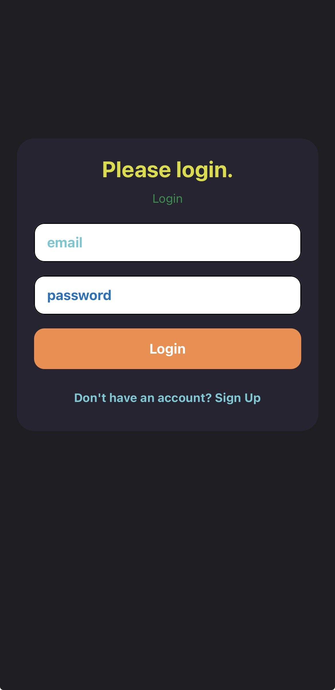
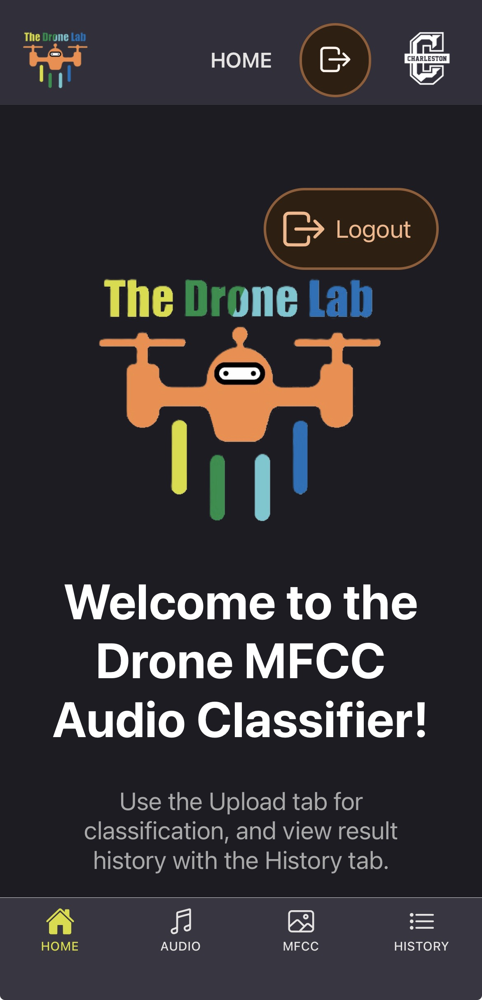
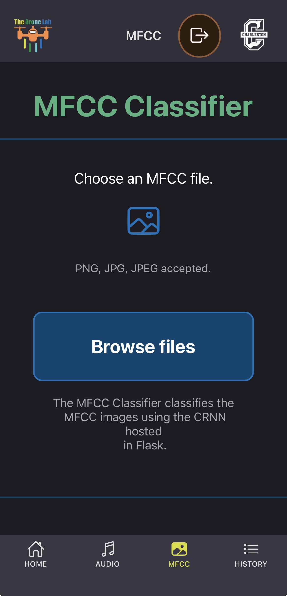
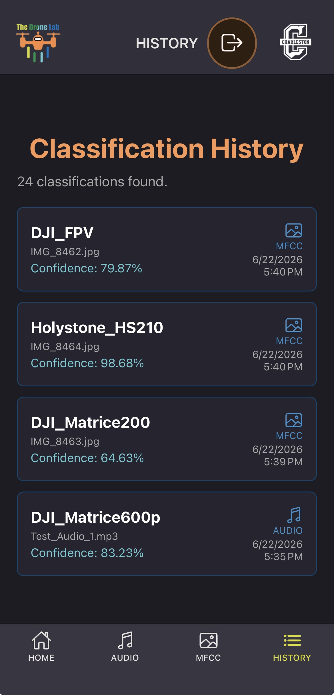
A React Native Expo application to allow users to upload a drone audio MP3 file or a PNG/JPG/JPEG image of an MFCC image of drone audio for classification as a certain Drone brand and model (ex. DJI Mini 3). Application handles Auth/Database on Supabase and connects User History to the user account. Flask and Python are used in the backend of the application to host a CNN model and handle file processing / classification return.
Presentation & Details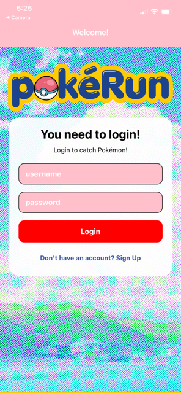
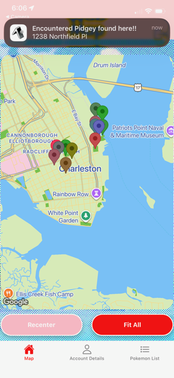
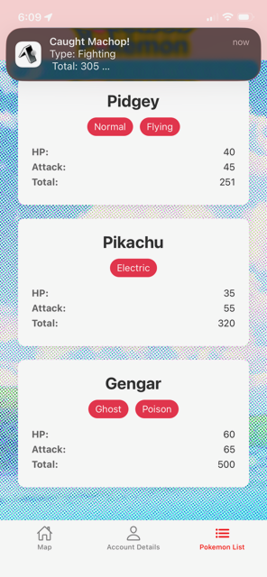
A React Native Expo application that gamifies fitness and improves Pokemon Go by having users locate pokemon at real-world coordinates and perform exercises to catch the Pokemon. Users navigate a custom interactive map, track down nearby Pokemon using GPS geofencing, and complete randomized physical exercises to catch Pokemon and level up their trainer profile.
Local SQLite storage manages user accounts, a master list of Pokemon fetched from an external JSON API, dynamically mapped pins, and nearby active Pokemon encounters. Use of expo-notifications to send local alerts to the device whenever a geofence boundary is crossed and a Pokemon is encountered. Use of expo-location to actively track user coordinates and trigger background events when a user walks within 150 units of a designated map pin. Integration of react-native-maps with a custom-styled Google Maps provider to display interactable Points of Interest and dynamically pan to specific coordinates. Local sign up, login, and logout functionality and session state management managed by expo-secure-store.
Presentation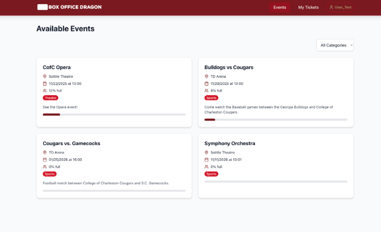
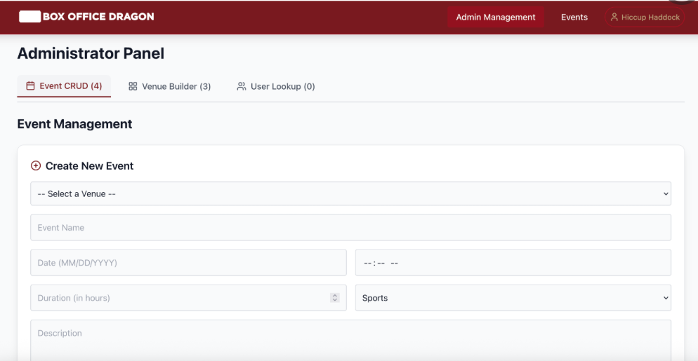
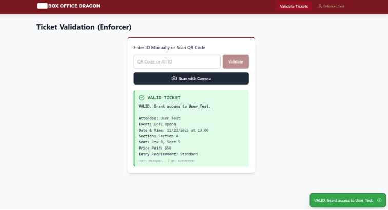
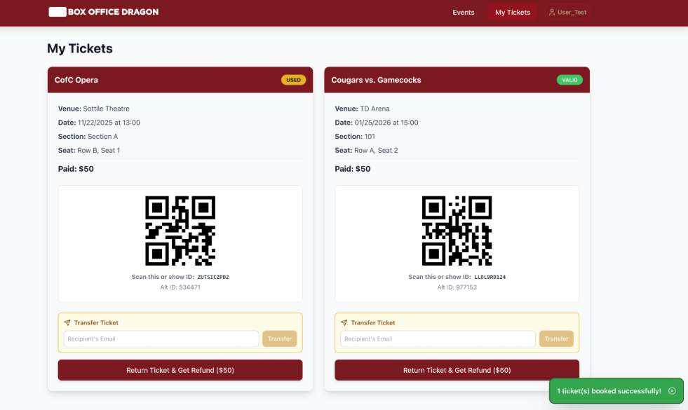
A React application that provides a payment system for student, faculty members, and non-college users to view purchase, and reserve seats in college-owned stadiums, theatres, and auditoriums.
Users can cancel reservations or transfer tickets. A set amount of seats are reserved for certain populations, such as faculty and handicap. The app is open to non-students but provides student and faculty accounts with ticket discounts. The app outlines a process for secure payment via third party applications or credit card. Tickets are provided to the user as a scannable QR code. Admin Admin Ticket Enforcer interfaces are provided. Firebase provides authentication, backend, and database services for the application.
Academic Poster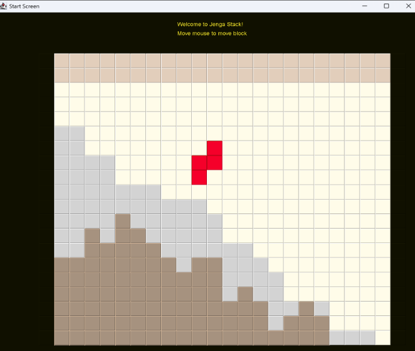
A Java and Javax Swing application that uses a stack structure and expands on the classic game, Tetris. The user must entirely cover the grey blocks present on the board with Tetris pieces before any block touches the tan buffer zone at the top of the grid. Winning or losing triggers an end screen created by Michelle Clark using Adobe Fresco on a tablet (JPG). Incorporates images, audio (WAV), motion, keyboard input, and JPanel updates.
An array stack holds 300 integer values (0-6) and pops the top integer of the stack to determine the shape of the current falling block (Z, L, O, S, I, J, or T).